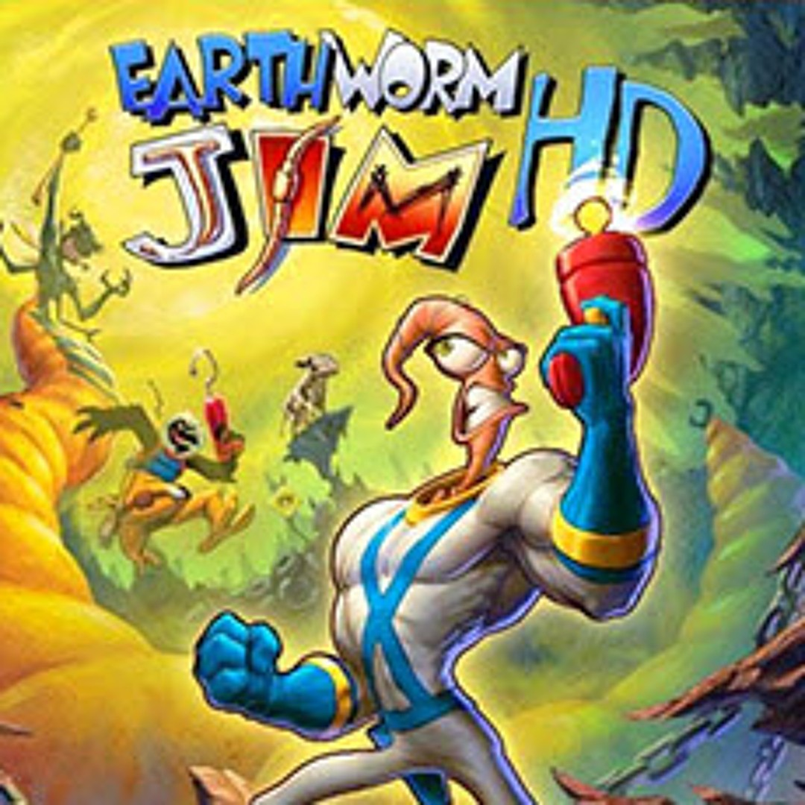

Фан-хаб по «Червяку Джиму»: иллюстрированный справочник по первой игре и играбельный браузерный прототип в духе Earthworm Jim 2.
Прототип на Canvas: рисованные Джим, помощники и злодеи, плазма, голова-хлыст, вертолёт, крюки и Снотт. 5 уровней и 5 боссов. Клавиатура и тач.
▶ Запустить игру →
Скриншоты всех миссий, персонажи, враги и боссы, оружие, помощники и транспорт — со счётчиками.
Открыть справочник →